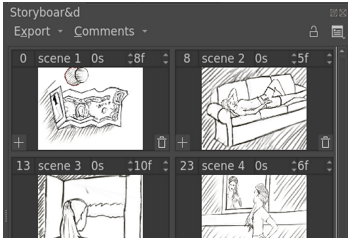
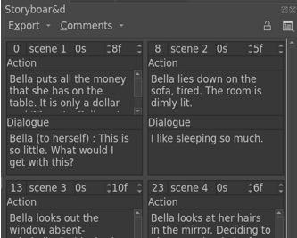
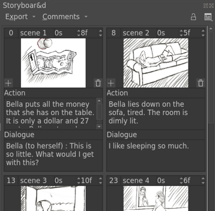
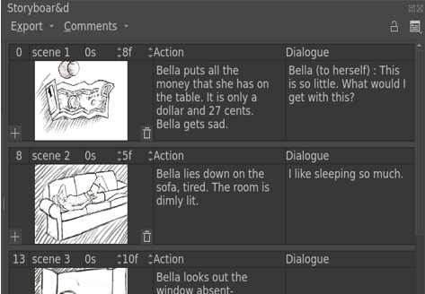
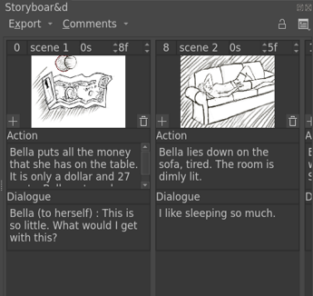
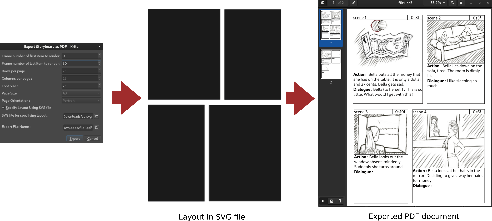

Storyboard Docker¶
A storyboard is a series of drawings and directions that outlines a film as a set of scenes. These scenes may be accompanied with text that can provide additional context such as dialog, action descriptions, or pertinent details needed for production. Storyboarding is used extensively during the planning phase of a film to achieve a better understanding of the overall production and its needs. Storyboards are also useful for teams to discuss the scene-by-scene flow of a film or make any necessary changes before entering the production phase.
Krita's Storyboard Docker allows the user to develop a story by creating and managing scenes. This includes the addition, removal, or adjustment of a scene. Users can also insert additional scenes between other scenes when necessary, or reorder scenes via drag-and-drop. The storyboard's visual content exists within Krita's internal animation system, which gives users the ability to preview the sequence using the Animation Timeline's transport controls. The storyboard docker also supports exporting the contents of a storyboard to a document. The current supported formats for export are SVG and PDF.
Storyboard Scene¶
A storyboard scene represents an individual scene in a larger production. There can be multiple keyframes within the duration of a single scene, with the thumbnail representing the first keyframe of a given scene. Each scene has a header with editable fields -- such as scene names and durations. Storyboard scenes can be inserted before or after any other scene. The order of scenes can be changed at any time using drag-and-drop. Changing the order of scenes will be reflected appropriately in the timeline, where keyframes will be reordered to accommodate the new desired scene order.
- Frame Number
This shows the starting frame number of the scene. This field cannot be edited.
- Name
The scene name. Double-
 to make it editable, and press the Enter key to finish editing.
to make it editable, and press the Enter key to finish editing.- Duration in Seconds
A spin-box. This will set the duration of the scene in seconds.
- Duration in Frames
A spin-box. This will set the duration of the scene in frames. Frames represent the division of seconds, which is dependent on the users' desired Frame Rate setting.
- Thumbnail
A thumbnail representing the contents of a scene. Unlike the comments, it cannot be edited inside the docker directly. Instead, changes must be made within the canvas after selection.
- Add Item
A button on the lower left corner of the thumbnail that adds a new scene after the duration of the current scene. The new scene will start with a duration of 1 frame, which is the smallest possible length of a scene.
- Delete Item
A button on the lower right corner of the thumbnail that deletes the current scene. The keyframe contents of the deleted scene will be transferred to the scene just before. This is used to prevent accidental data loss.
- Comment Name
Name of the comment field. This field is uneditable directly but can be edited from the Comment menu.
- Comment Field
The comment content. Double-
to make it editable, and press the Enter key to finish editing.
Storyboard View and Modes¶
The View and Mode options for the Storyboard Docker are available via the Arrange menu. These options allow the user to change the visual arrangement or elements of the scenes.
- View
Options that filter which parts of the scene to show within the Storyboard Docker.
Thumbnail Only : Show only the thumbnail portion of a scene.
Comments Only : Show only the comments section of a scene.
All : Show all elements of a scene.

- Mode
Allows the user to change the visual arrangement of scenes within the Storyboard Docker.
Row : Scenes are arranged in a row-wise fashion. The scene's comments are on the right side of the thumbnail.
Column : Scenes are arranged in column-wise fashion. The scene's comments are below the thumbnail.
Grid : Scenes are arranged in a grid. In this mode, if you change the size of the docker, the grid is rearranged to accommodate more scenes in the docker.
Using Storyboard docker¶
- Adding Scenes
There are two ways to add scenes :
 and choose either Add Scene After or Add Scene Before
and choose either Add Scene After or Add Scene BeforePress the Add Button at the lower left corner of thumbnail of the scene, this is the same as Add Scene After.
- Deleting Scenes
There are two ways to delete scenes :
- and Remove Scene.
Delete button at the lower right corner of thumbnail of scene, this is the same as Remove Scene.
備註
Deleting scene in storyboard does not delete the keyframes at the scene's frame. Instead the duration of the deleted scene gets added to the previous scene. This is prevent accidental data loss upon removing a scene.
- Reordering Scenes
Scenes can be reordered using drag and drop. All the keyframes within the duration of that scene will move upon reordering.
- Managing Comment Fields
The storyboard docker allows for the management of multiple optional comment fields. While some projects might require only one comment field for dialog per scene, some might require additional fields that describe character actions or camera directions. The Comment menu allows the user to configure these comment fields.
To make a new comment field, go to Comment menu and click on the plus button at the bottom-left. A new comment field will be added to the menu. Change its name and press Enter. Every scene will now have the new comment field available to edit.
To delete a comment field, select it and press the Delete button at the bottom-right corner of the Comment menu.
To toggle visibility of a comment field click on the eye icon.
To rearrange the order of comment fields use drag and drop in the Comment menu.
- Adding Comments
To add a comment to a comment field in a scene, double click on the comment's area to make it editable. When finished, click outside of the area to save it.
- Changing duration
Use the spin-box's up and down button to change duration by one. Double click to make the field editable by typing.
- Working with multiple layers
When working with multiple layers, if you want to change only one of the scene thumbnails when drawing on canvas, you should insert keyframes at that scene's time in the current layer. An easy way to do this is to turn the Auto Frame mode on in the animation docker. That way any changes that you make with the scene selected will insert a keyframe at the scene's time in the current layer and thus would change the thumbnail for that scene.
Exporting Storyboard¶
The storyboard created using the docker can be exported to PDF or SVG documents. The Export Menu offers options to export the storyboard. It has options to export as either a PDF or SVG document. Choosing any of these will take you to the Export Dialog where you can pick the layout, that is, how scenes of the storyboard are arranged in the exported document. You can either set the layout using custom options provided or using an SVG file. The Export dialog also provides options for which the scenes to export.
You can choose the range using the frame number of storyboard scene. The first two options in the dialog let you select the first and last frame to export. All scenes that have frame number in that range (inclusive of both the first and last) would be exported. Here you can also select the font size of any text on the document, such as scenes' name, duration or the comments.
- Specifying layout using custom options
The following options are provided to specify layout :
Rows per page
Columns per page
Page Size
Page Orientation
- Specifying Layout using SVG file
For specifying layout using an SVG file you have to upload an SVG file. The file should have one or more non-overlapping rectangles.
- File name for Export document
PDF : Choose the filename of the export document.
SVG : Choose the directory where you want to save the exported files and a base name. The exported files will be named baseName followed by a numerical suffix. e.g. base0, base1 etc.